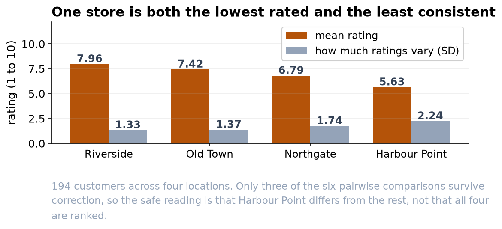

Harbour Point Is the Store to Look At
Customer experience genuinely varies across the four locations, but only three of the six comparisons hold up.
Recommendation
The four locations are not delivering the same experience (p < 0.001, n = 194). Harbour Point is the clear problem: lowest ratings and the widest spread by a distance. Riverside is the strongest. Old Town and Northgate sit in the middle and cannot be told apart from each other, so please do not turn this into a four-store league table.
What we found
194 customers rated their experience out of 10 across the quarter. Riverside's typical rating is 8, Old Town and Northgate both 7, and Harbour Point 6. The overall difference between locations is far too large to be chance, and where a customer shopped accounts for roughly a sixth of the variation in how they rated us.


Only three of the six comparisons hold up
With four stores there are six pairs to compare, and testing all six raises the odds of a false alarm, so the comparisons are corrected. After correction the picture is less tidy than the ordering suggests.

Riverside is above Northgate and Harbour Point. Old Town is above Harbour Point. Everything else, including the gap between Northgate and Harbour Point, is within the range this quarter's data cannot resolve. That does not mean those stores are equal. It means we cannot yet say they differ.
What to do with it
- Put the attention on Harbour Point. It sits reliably below the two best stores, and its wide spread suggests an inconsistent experience rather than a uniformly poor one. Inconsistency usually traces back to staffing or scheduling rather than to the site.
- Keep an eye on Northgate without acting yet. It is the second-lowest and its gap to Harbour Point is not established.
- Do not rank the middle two. Old Town and Northgate are indistinguishable on this data, and any ordering between them would be noise presented as a finding.
- Do not use this for performance reviews. The differences are between locations, which vary by neighborhood, size and footfall. They are not a measure of the people working in them.
What we cannot say
Feedback here is volunteered, and customers with strong feelings volunteer more readily. If Harbour Point's unhappy customers are also its most vocal, part of the gap is a response-rate effect rather than a service difference. The stores also differ in ways this data does not capture, so the analysis identifies where to look, not what is wrong. One more request: please do not put an average rating on the dashboard. A 1-to-10 scale tells us the order of customers' opinions, not the distance between them, so the share giving 8 or more is the sturdier number.